<ion-content scroll-y="false">
	<div class="body" id="bodyId">
		<ion-icon name="help-circle" size="large" class="iconHelp" routerLink="/info"></ion-icon>

		<div class="header centralizar">


			<div class="pulse" align="center">
				

				<br>
			</div> <br>
			<ion-text> Gerencie suas notas! </ion-text>

		</div>

		<div class="centralizar">


			<ion-segment [(ngModel)]="abas">

				<ion-segment-button id="segment1" value="n2">
					<ion-label>Nota N2</ion-label>
				</ion-segment-button>

				<ion-segment-button id="segment2" value="final">
					<ion-label>Nota Final</ion-label>
				</ion-segment-button>

				<ion-segment-button id="segment3" value="salvas" onclick="callTs()">
					<ion-label>Salvas</ion-label>
				</ion-segment-button>

			</ion-segment>
		</div>

		<div [ngSwitch]="abas">
			<div class="fundo">
				<div align="center" *ngSwitchCase="'n2'">

					<ion-grid>
						<ion-row>
							<ion-col>
								<ion-label class="subtitulo"> Prova N1 </ion-label>


								<ion-input type="tel" onkeyup="convertTen(1); closeKeyboardOnGo(event)" class="input"
									id="n1" mask="0.0"></ion-input>

							</ion-col>

							<ion-col>
								<ion-label class="subtitulo"> Média de Atividades </ion-label>


								<ion-input type="tel" onkeyup="convertTen(2); closeKeyboardOnGo(event)" class="input"
									id="n2" mask="0.0"></ion-input>


							</ion-col>
							<ion-col>
								<ion-label class="subtitulo"> Teste de Progresso </ion-label>


								<ion-input type="tel" onkeyup="convertTen(3); closeKeyboardOnGo(event)" class="input"
									id="n3" mask="0.0"></ion-input>

							</ion-col>
						</ion-row>

						<ion-row>
							<ion-col>
								<ion-button onclick="limpar(1)" color="none" shape="round" class="botao">Limpar
								</ion-button>
							</ion-col>
							<ion-col>
								<ion-button onclick="calcular(0)" color="none" shape="round" class="botao">Calcular
								</ion-button>
							</ion-col>
						</ion-row>
					</ion-grid>
				</div>

				<div align="center" *ngSwitchCase="'final'">
					<ion-grid>
						<ion-row>
							<ion-col>
								<ion-label class="subtitulo"> Nota N1 </ion-label>

								<ion-input type="tel" onkeyup="convertTen(4); closeKeyboardOnGo(event)" class="input"
									id="n4" mask="0.0"></ion-input>

							</ion-col>

							<ion-col>
								<ion-label class="subtitulo"> Nota N2 </ion-label>

								<ion-input type="tel" onkeyup="convertTen(5); closeKeyboardOnGo(event)" class="input"
									id="n5" mask="0.0"></ion-input>
							</ion-col>
						</ion-row>

						<ion-row>
							<ion-col>
								<ion-button onclick="limpar(2)" color="none" shape="round" class="botao">Limpar
								</ion-button>
							</ion-col>
							<ion-col>
								<ion-button onclick="calcular(1)" color="none" shape="round" class="botao">Calcular
								</ion-button>
							</ion-col>
						</ion-row>
					</ion-grid>

				</div>

				<div *ngSwitchCase="'salvas'" align="center">

					<div id="salvasId">

					</div>

					<div id="botaoSalvaId" >

					</div>
				</div>
			</div>
		</div>
	</div>
</ion-content>